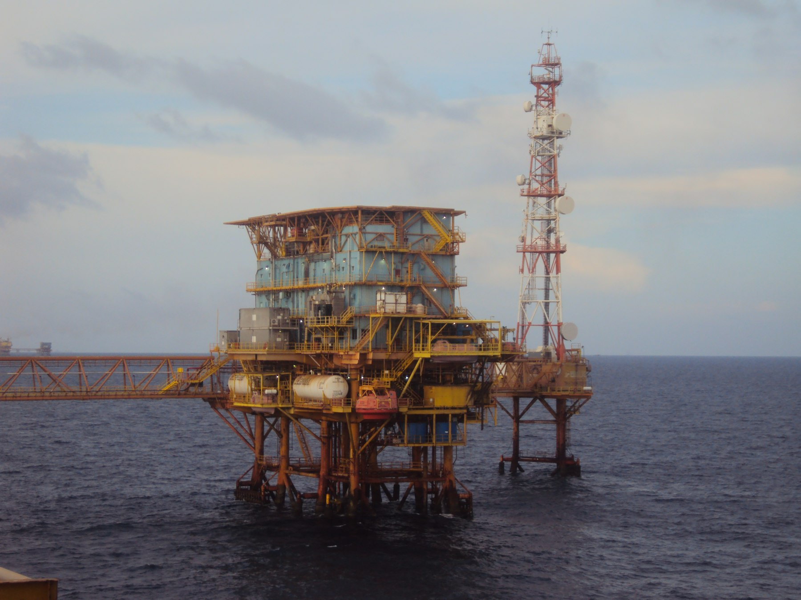

Company profile · Nigeria
Sea Dolphins
Security Services Ltd.
Offshore surveillance and security capability for petroleum assets and associated facilities.
Figures are as stated in the company profile.
The company
Protection and surveillance of offshore petroleum assets
Sea Dolphins Security Services Ltd. is presented as a security services company focused on the protection and surveillance of strategic offshore petroleum assets and associated facilities.
Its stated focus combines offshore security surveillance, maritime patrols, monitoring of offshore oil wells and facilities, vessel monitoring, intelligence gathering, rapid incident reporting and coordinated security response.

Offshore security challenge
A wide operating area that needs continuous watch
The scale of the offshore environment and the concentration of oil wells and associated facilities create a requirement for continuous, professional surveillance. The stated area covers offshore fields within Akwa Ibom State.
Security conditions described
- Cross-border illegal oil bunkering
- Crude oil theft
- Unauthorized vessel movements
- Maritime security threats
- Unauthorized access to offshore assets
Operational focus
What the stated capability covers
The company profile sets out a combined surveillance, patrol and reporting focus. Each item below is part of that stated scope.
Offshore security surveillance
Continuous surveillance of offshore petroleum assets, stated as the company’s primary focus.
Maritime patrols
Patrol activity at sea, proposed alongside surveillance and security support.
Well and facility monitoring
Watch on oil wells and associated facilities inside the stated operational area.
Vessel monitoring
Observation of vessel movements around offshore assets.
Intelligence gathering
Information gathering to support prevention and detection of illegal activity.
Rapid incident reporting
Prompt reporting so incidents can be acted on without delay.
Proposed coverage
Continuous 24/7 surveillance supportThe proposed operation combines maritime patrols, modern surveillance technology, intelligence gathering, rapid incident reporting, vessel monitoring and coordinated response mechanisms.